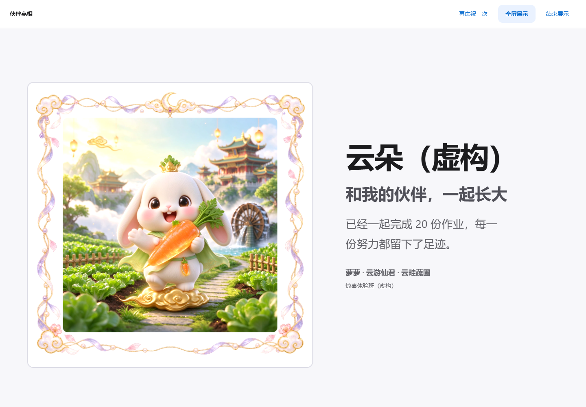
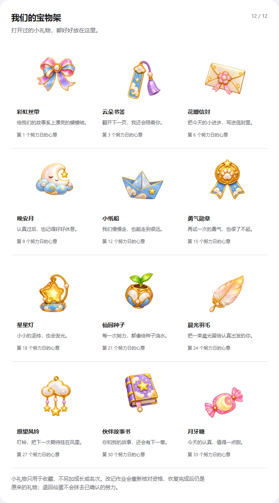

先认养，再开始
粘贴班级名单，为孩子选择伙伴。100只仙宠各有名字、喜欢的食物和四阶段原画。
给我一口喜欢的食物吧。
粘贴班级名单，为孩子选择伙伴。100只仙宠各有名字、喜欢的食物和四阶段原画。
逐人确认，也能批量操作。待补交有清单，补齐后继续出发。宠物成长始终由老师把关。
努力徽章、小收藏、伙伴来信和课堂大屏；期末再把专属宠物做成可以拿在手里的卡片。
作业是否达标、考试礼包发给谁、期末正式名次，都由老师确认。饥饿和回蛋按教学日计算，周末与老师设置的假期不计时。
一份作业不会重复奖励，成长值不会替代考试名次。孩子看到陪伴，老师保留判断。
亲手试试喂食、礼包和成长册 →
愿你带着好奇与勇气，在每个平凡日子悄悄发光。
老师录入正式名次后，前10名可以获得自己的宠物珍藏卡。每次选择一位学生，只打印一张六英寸竖版珍藏卡（4 × 6 英寸）。孩子认养的仙宠以终极形态占据卡面。
左栏记录学生和养成天数，右栏介绍仙宠和它的喜好，祝福语置于卡片底部。
查看六英寸打印样卡 →上方卡面为虚构示意。原画1024px，实际效果取决于纸张和打印设备；支持当前预览替换本地高清同宠物原图。
在成长册里收集「初次相遇」「第一次进阶」「期末纪念」三张电子卡，每张都能免费保存。星辉与云游装扮、12 件小收藏和 8 封来信，也会陪伴宠物成长。
小收藏记录已经确认的努力，既不另加分，也不更改学校排名。

教师版免费使用。建班、认养、喂食、礼包、电子成长卡和期末奖励卡都可直接使用。孩子无需注册，也无需付费。
100 只宠物，400 张成长原画。下载后完整解压，用桌面 Chrome 打开 index.html。记录保存在本机；换版本或电脑前先导出班级备份。
用虚构学生试试喂食、奖励和卡片，无需登录。
咨询邮箱 273916641@qq.com
联系电话 18510860703
本页没有支付入口。咨询时无需提供学生姓名、名单或成绩。
不需要。主要操作由老师在电脑上完成，可以用教室大屏展示伙伴和表扬。
保存在这台电脑、这个浏览器内。请定期导出班级备份；清理浏览器数据、换浏览器或换电脑时，需要用备份恢复。本地版不自动跨设备同步。
老师确认补交后可以继续喂食；三教学日饥饿回蛋的默认规则可调整。过往已确认的努力与收藏保留。老师应结合孩子的具体情况使用工具。
它是课堂激励与陪伴工具，成绩效果需要真实班级使用后验证。考试奖励和学校正式名次由老师确认，软件不自动替老师评价学生。